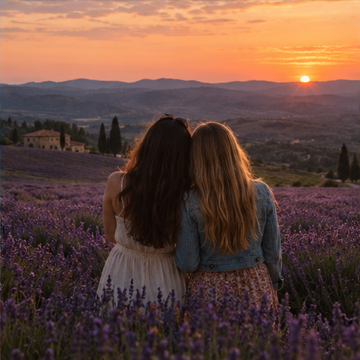
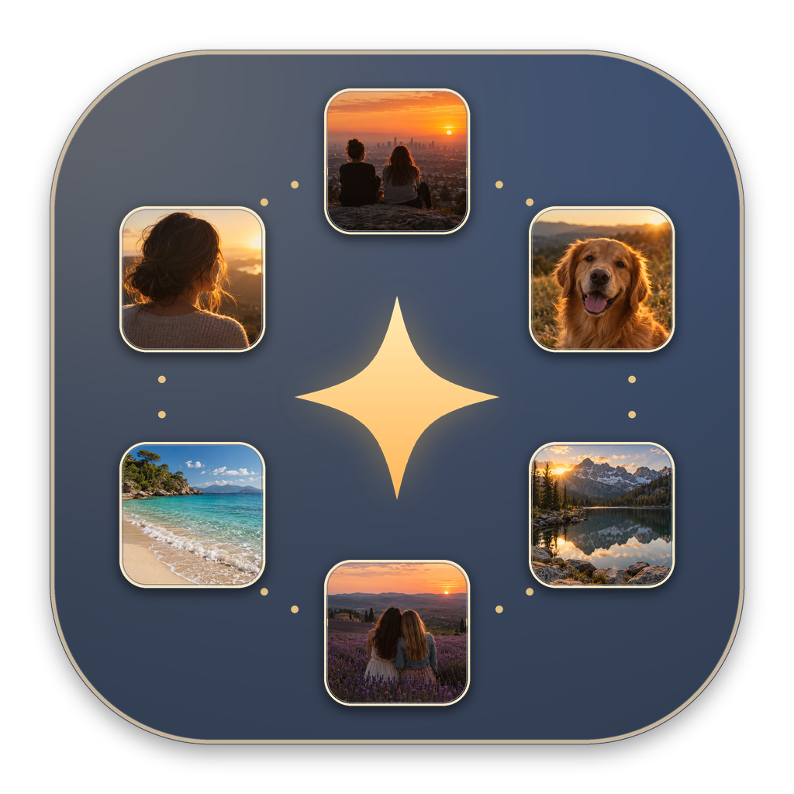

Search
Find the memory, not just the object.
Describe the person, pattern, or moment you remember. UnEarth searches across the years.
Mom and the girls cooking together

Search for the people, traditions, and moments that shaped your life—even when all you remember is what they meant.
A new kind of access
No perfect filename. No endless scrolling. Describe what’s in your head and move through your library like it finally understands you.
One library. More possible.
Describe the person, pattern, or moment you remember. UnEarth searches across the years.
Bring strong, overlooked photos and recurring moments back into view.
Move from an idea to a focused set of photos you can review, refine, and keep.
UnEarth does the complex work underneath. You search, choose, and create.
Built to disappear
A focused Mac experience for moving from “I remember…” to “there it is.” The technology stays out of the way until you need it.




Built around your library, not around the cloud. Local by default. Apple Photos stays the source of truth.

Private beta development
UnEarth is being prepared for a small Mac beta focused on fast search, surprising discovery, and effortless collection building.
Join the private beta